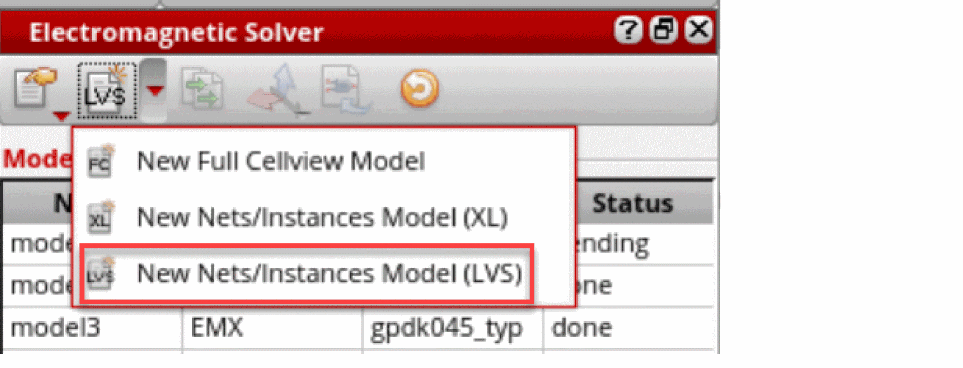
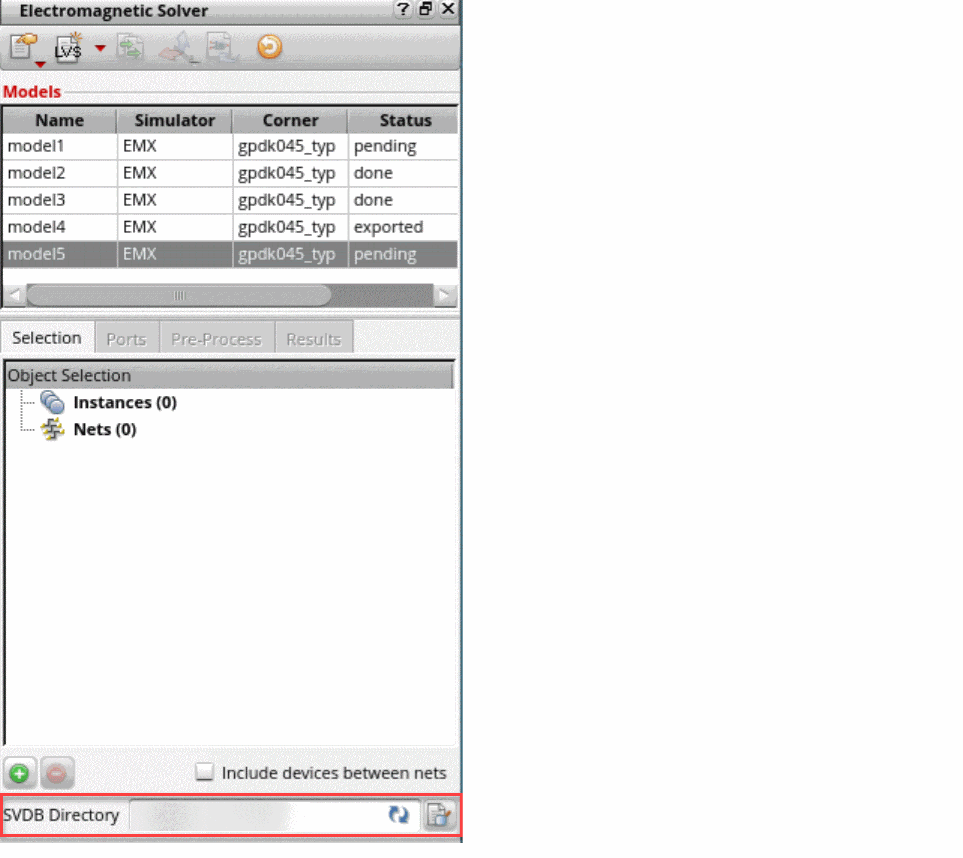
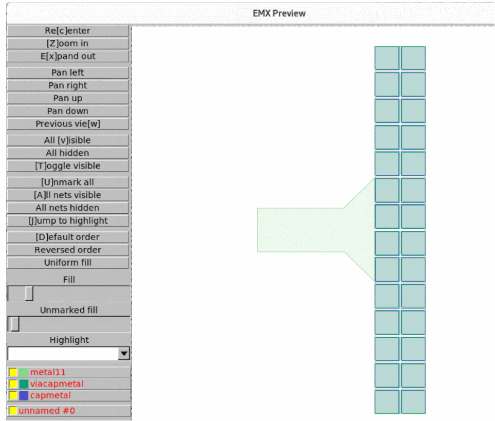
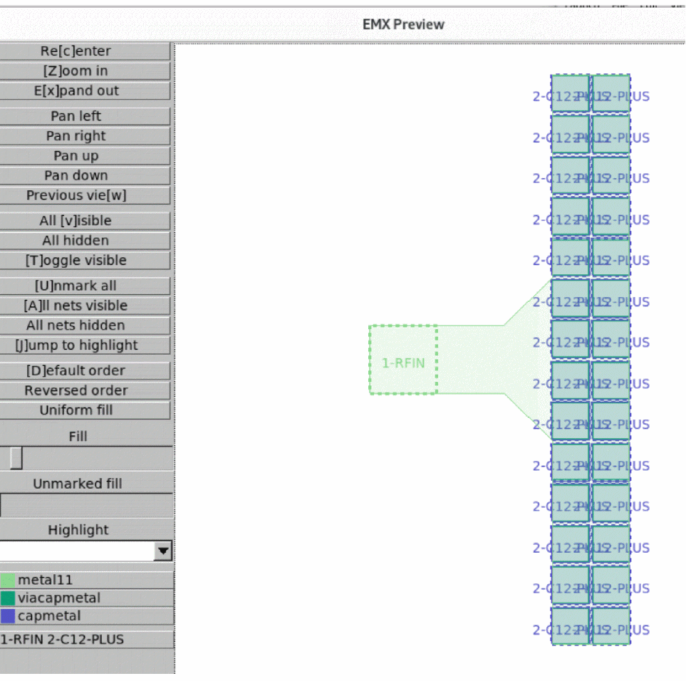
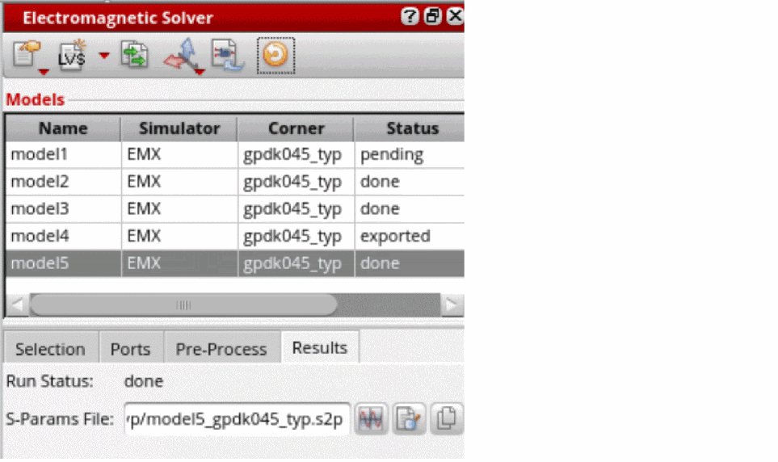

Extracting Nets with EMX Using the LVS Flow
This flow uses only the sign-off LVS, which ensures full synchronization with the Smart Views generated by Pegasus™ Verification System and Quantus™ Extraction Solution. However, the XL flow uses the Virtuoso XL extractor to extract the nets, which requires a properly configured XL and an XL-compliant layout. The LVS flow does not use XL extractor and does not require XL compliance. It only needs the output from a clean LVS run.
To perform LVS-based EMX extraction and Smart View stitching using nets:
-
Choose New Nets/Instances Model (LVS) from the drop-down list to create a new LVS-based model.
A new LVS model is created. Such models have an SVDB Directory field at the bottom. The SVDB directory is created by the LVS tool.
 -
Browse through SVDB Directory. Descend into the LVS run folder and select
svdb.
The SVDB database is loaded into memory. You can customize the SVDB Directory label as well.For large designs, reading SVDB can take several minutes. However, it is a one-time step. Once the SVDB is in memory, it does not need to be read again until you rerun LVS or restart the EM Assistant. - Add a net to the model. The net or instance selection needs to be made on the corresponding schematic.
-
Preview the model in Virtuoso by clicking Preview EM Layout in the Pre-Process tab. Alternatively, preview the model in EMX gdsview with Preview Geometry.
This exports a CLF file and displays it ingdsview. The layout is shown exactly as the EMX solver will see it.
 - Generate ports.
-
Run Preview Geometry again. You will see the ports and the net names in the EMX preview.
 -
Run simulation and load the results.
 -
Create an extracted view. The reference view for the extracted view must be a Quantus Smart View. In the Create Extracted View form, you can choose Quantus Smart Views only when the model is of type LVS. When stitching, the Smart View’s ground net is used as the ground net for the
nport.
Additionally, you can partially extract a net that connects to a device layer. For partial net extraction, you can expand a net by clicking + and specifying a layer name. This creates an EMX port on every shape of the specified layer. Such ports are reconnected to the Quantus parasitics below the specified layer. Ensure that the EM Analysis mode is enabled in Quantus when using partial nets.
You can extract only the upper layers with EMX and use Quantus RC elements for the lower layers. Many basic PDK cells, such resistor and capacitors, can be extracted by the LVS flow. Add the instances of these cells into an EMX model.
The instances of LVS blackboxed cells can also be added to the EMX models. To include instances that are blackboxed in the LVS flow, expand the instance name and specify the name of the corresponding layout instance. The content of blackboxed instances is not read from the SVDB file. The EM Solver assistant reads it from the Virtuoso layout. Consequently, you need to provide the name of the layout instance to use.
Related Topics
Return to top